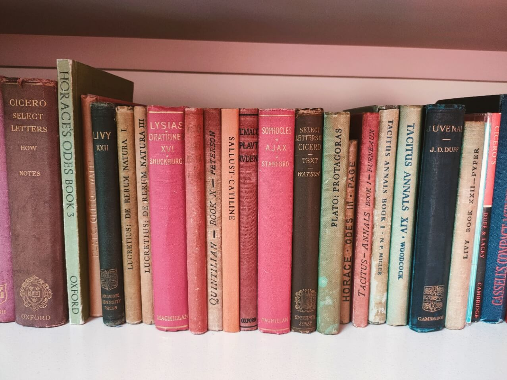
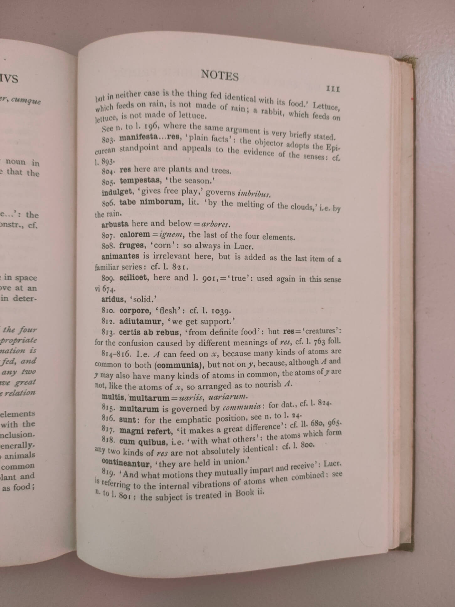

Classical editions for easy reading
Previously I wrote about the tendency for online texts to lack the readerly pleasure of many classical editions.
The Loeb library has long been a favourite among classicists. The bright red and green tomes look well on the shelf. They fit in the hand and in the pocket. Their double pages, pairing original Greek or Latin with a facing translation, enable the reader to do without the usual paraphenalia of lexicon, grammar, commentary.
The Loeb makes "holiday" reading possible, not just on the beach, but away from the desk and for reading larger quantities than detailed study usually permits.
Between the late 19th and mid 20th century, there were a range of texts for school and undergraduate students which reduced the size of a reading volume still further. Cambridge's Pitt Press Series published book sections of wider classical works (such as Dodds' 1923 Book I of Lucretius' DRN) or shorter texts (such as Summers' 1968 Cataline by Sallust) resulting in volumes of little more than 150 pages, encompassing introduction, text, and commentary endnotes. The result was a hardback similar in profile to a Loeb (they measure 6¾ inches by 4⅝) but much thinner.

I have found myself making a collection of these Pitt Press volumes, since I find them the most enjoyable means of reading a classical text. Brevity is their strength. It enhances portability. But readability is maintained not with a facing translation but by endnotes focussed on comprehension. Moreover, choosing a book of the Aeneid, and not the whole work, as with the Loeb, is a much less fancible objective for my reading in a week, or a day.

The books are printed with care as to the layout, orderliness and readability. I like the typeface (though I have no idea what it is). Identifying where one is in the text is never difficult thanks to the standard reference numerals discretely set back from the main text. The notes appropriately use bold for headwords of the comment, and conventions for glossing and Latin text neatly separate what sometimes is crowded into uniformity. These small details are not to be underestimated when the reading of classical texts involves the regular moving between text and notes---it is essential that the reader can identify where he left off and where to find the note.
Both the Loeb and the Pitt Press are hardback. Like the English brick of houses from the same periods, several generations are able to enjoy them, and their facades improve over time with the patina of use and weathering. It is so much to be preferred to the contemporary laminated fronts of paperback facsimiles.
So, what spirit of these lovely objects might inspire the Loeb and Pitt Press' digital descendants? Certainly, there should a similar care for readerly pleasure in format, layout, how the thing looks. But the more particular lesson is that shorter texts enable our "holiday" reading, so long as there is also the minimal necessary help of translation or commentary. I suggest that one common mode of holiday reading is done on a mobile device with smaller screens and lesser margins. Selection of information---that is, curation---is therefore the driving principle for online readers, just as it always has been for commentary writing.
Many of the Pitt Press Series have been digitised and are available at the Internet Archive. Among them is Arthur Sidgwick's Bucolica of Vergil. It being out of copyright, I shall be incorporating its notes, and perhaps introduction, into vergil.co.uk.